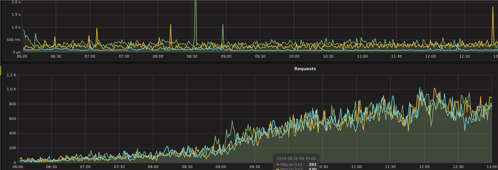

Python, Gevent and SQL-Server
Months ago, we had met requirements to migrate our main HTTP-API service to Gevent.
This service is a large, modular API system that can literally spawn APIs without downtime. We use it in many products including marketing micro-sites, client's tailored HTTP APIs, data collecting and behavior tracking. It uses Flasks as HTTP micro-framework, and dynamically loads applications (as we handle 150+ different APIs, we do not directly load all of them into memory - some of them are called once a month).
That gives us an incredible flexibility upon material resources and a very good traffic absorption, at the cost of some latency, encountered when the first HTTP requests hit an unloaded API. We don't really care about this, since we need way more availability than low latencies. Also, this allow a decreasing latency when HTTP traffic rises, because of lazy loading. Fun to see.
This whole bunch of code is proudly handled by uwsgi. Since uwsgi spawns a lot of processes per host, it can handle a lot of requests before things goes wrong.
But ... this design contained a severe mistake: what if something waits on I/O for a long time?
Like, database becoming slow after a few millions of updated rows? A remote webservice going down?
As Uwsgi spawns N processes, this number N is similar to Super Mario's amount of "lives", but Mario is your whole application, and any blocking IO operation (eg: http webservice, slow database lookups) could lower your amount of available processes/threads at a given time.
Depending on your OS, you could easily spot this... or not. Depending on how your system computes load average (does processes waiting for IO completion counts ?). Nagios will alert you. Or not.
Of course, we could spawn more processes. That's not very smart, and our servers were already overloaded.
We decided to make our app gevent compliant (by avoiding potential races conditions), import gevent and monkey patch all the stuff.
After resolving a few (*^@#& pymssql/SQLServer's issues, we managed to get our app up and running on a single node of our cluster.
And them - booom
Booom
Performances increased a lot... way more than we expected. We had eliminated one potential cause of unavailability, occuring when all the threads/processes are blocked, waiting for IO completion (or worst!). Gevent, allowing our processes to do "something else", while "waiting for some stuff coming from the network/disks", avoids blocking in such cases.
Seriously, it is so fast that we could have sold a server, and responses times would have been better than before the full migration.

The turquoise one is our gevented node. This is a screenshot taken after one host migration, during the beginning of the daily rush. You can clearly see that it is not even stressed, without any spikes (a spike indicates a metric computed in a thread that have blocked for several seconds).
Regarding the server itself, load average drop from 100-120 to 30.
As all the three nodes can easily absorb that traffic, latency has not increased this morning. Using gevent, do not forget the database - it can struggle upon thousand of light-threads querying results. Worst if you make a bad use of transactions (for relational only -- NoSQL will just be inconsistent) Also, it could reveal race conditions within your DB logic, so be careful with that.
Database access limitation
We have limited database access to each underlying HTTP API by using an abstraction over gevent.queue.
This queue, blocking when empty, "naturally" suspends components if all of its connections are currently used.
By default, they can only fetch one database connection at one time, blocking if connection is used by another greenlet. Also, this is configurable.
Gevent could help when looking for performances, especially upon a large base of diversified code, but should be used with care :)